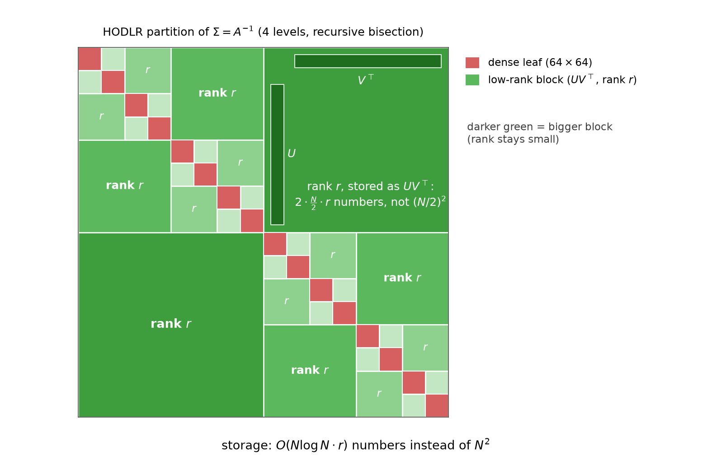
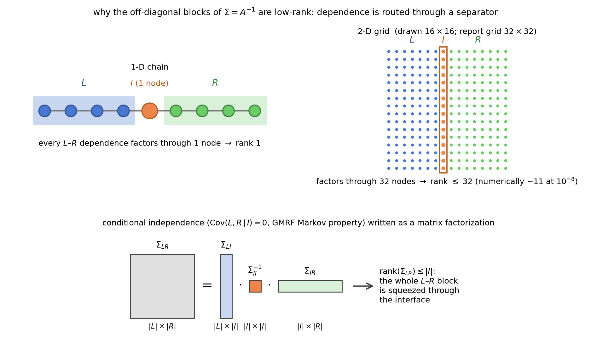
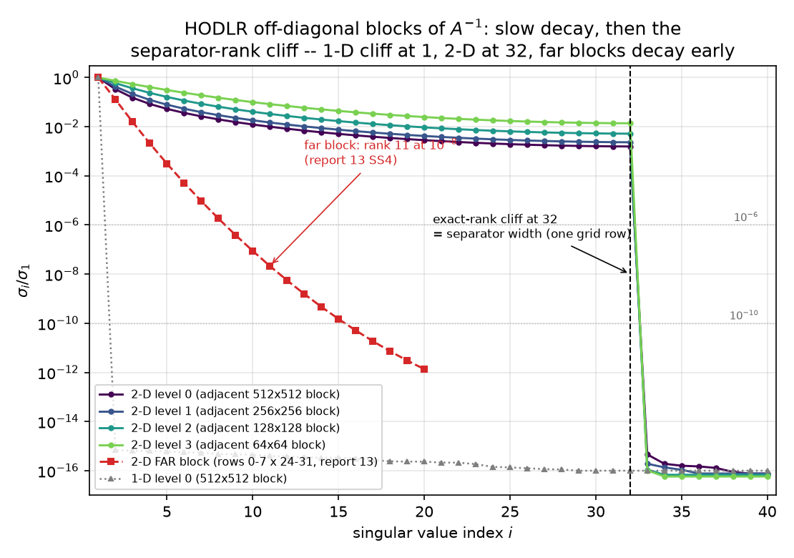
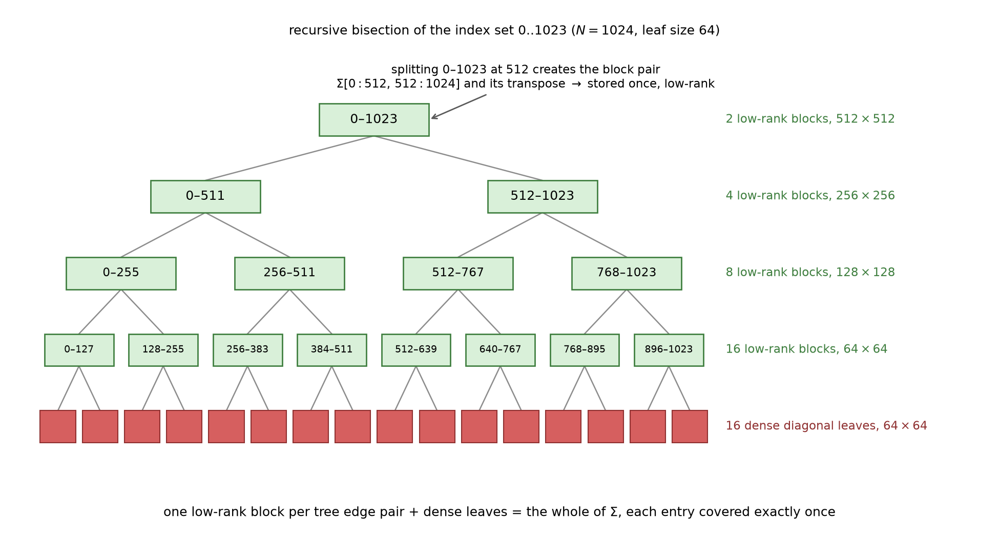
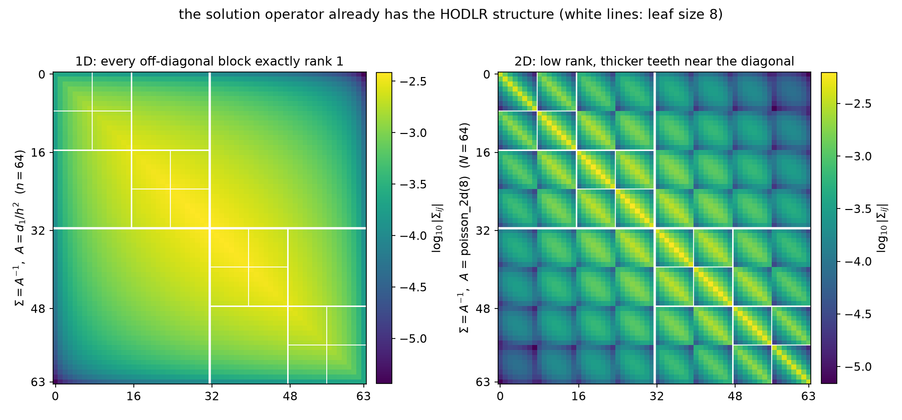
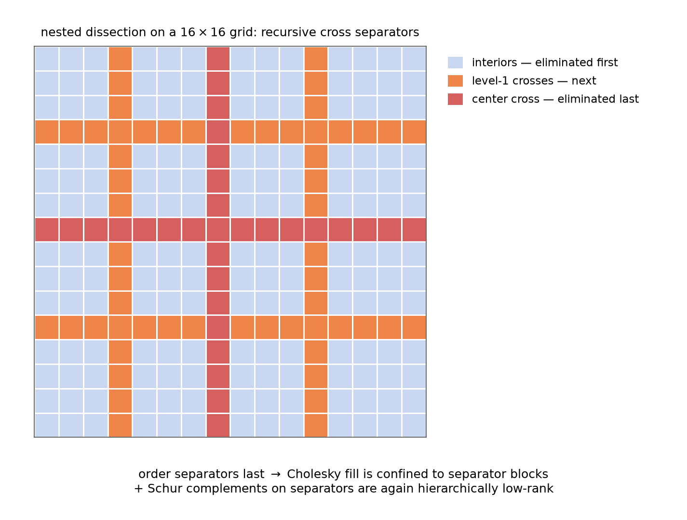
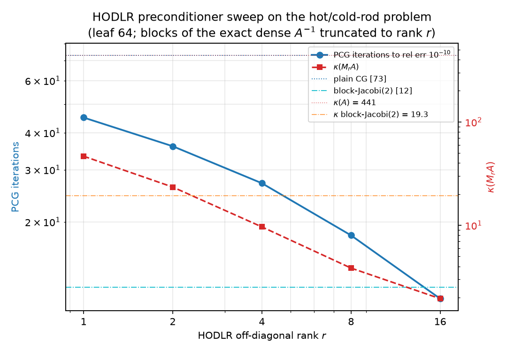
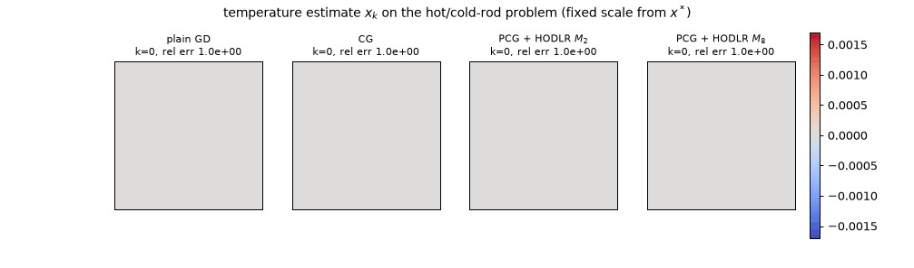

The structural sequel to 13 §3–4. 09 said $A^{-1}$ is the covariance of the Gibbs field $u \sim \mathcal N(A^{-1}b, A^{-1})$ and that zeros of the precision are conditional independences; 13 §3 found the 1-D inverse is exactly a rank-1 triangle and that far 2-D blocks of $A^{-1}$ have numerical rank 11 out of 256; 13 §4.1 measured $\mathrm{Cov}(u_L, u_R \mid u_I) = 0$ across a two-column separator. This report shows those three facts are one fact — conditional independence across a separator is a rank bound on covariance blocks, $\Sigma_{LR} = \Sigma_{LI}\Sigma_{II}^{-1}\Sigma_{IR}$, hence $\mathrm{rank}(\Sigma_{LR}) \le \vert I\vert$ — and follows it to its algorithmic conclusion: the hierarchical (HODLR / $\mathcal H$-) matrix representation of $A^{-1}$ (Hackbusch 1999), built, measured, and run as a preconditioner. Notation is the suite's: $h = 1/(n+1)$, 1-D $A_1 = d_1/h^2$ (laplacian_1d(n)/h**2), 2-D $A = $ poisson_2d(32), $N = 1024$, $\kappa(A) = 440.69$, hot/cold-rod right-hand side of 11 §6. Every claim is machine-checked by python/experiments/hierarchical.py (31 checks, all PASS, ~6 s; every quoted number in results/hierarchical.json); the schematic figures carry their own assertions in make_report14_diagrams.py; deviations from the planned story are logged in results/hierarchical.json → deviations and flagged inline. A companion interactive solver race (§5) runs the whole of §4 live in your browser.
The suite has lived with an asymmetry since 09 §2: the precision matrix $A$ of the temperature field is 4992 nonzeros — five-point stencil, $O(N)$ numbers — while its inverse, the covariance $\Sigma = A^{-1}$, is a full dense matrix of $N^2 = 1{,}048{,}576$ entries, every one strictly positive (a point source warms the whole plate). Conditional structure is local; marginal structure is global. Storing the solution operator looks hopeless at scale.
But 13 §3 already saw the loophole twice without naming it: the 1-D inverse's entire upper triangle is a single outer product ($n^2$ correlations from $O(n)$ numbers), and a far-field $256\times256$ block of the 2-D inverse carries numerical rank 11. Dense does not mean incompressible. The resolution is hierarchy: tile $\Sigma$ by a recursive bisection, keep the small diagonal blocks dense, and store every off-diagonal block as a low-rank factorization $UV^\top$. That is the HODLR format (hierarchically off-diagonal low-rank — the weak-admissibility special case of Hackbusch's $\mathcal H$-matrices):

The whole report in one picture: the $1024\times1024$ covariance $\Sigma = A^{-1}$ tiled by 4-level recursive bisection — 16 dense $64\times64$ leaves (red) on the diagonal, 30 low-rank blocks (green) off it. The largest block is $512\times512$ but stored as $U V^\top$ with $2\cdot\tfrac N2\cdot r$ numbers instead of $(N/2)^2$; darker green = bigger block, and the point of the whole construction is that the rank does not grow with the block ($r$ vs the separator bound 32, §2–3). Total storage $O(Nr\log N)$ instead of $N^2$.
The two questions the picture begs — why are those blocks low-rank, and what does the compressed inverse buy as a solver — are §2 and §4. §3 does the anatomy and the arithmetic.
This is the conceptual heart of the report, and it is nothing but 09's Markov property promoted from a statement about conditional dependence to a statement about marginal rank.
Split the grid as in 13 §4.1: $L$ = grid columns 0–14, $I$ = columns 15–16, $R$ = columns 17–31. The five-point stencil has no edge from $L$ to $R$: $\mathrm{nnz}(A_{LR}) = 0$, re-verified here (PASS 3). The GMRF global Markov property (Rue & Held) then says the halves are independent given the interface, and 13 measured exactly that: $\mathrm{Cov}(u_L, u_R \mid u_I) = \Sigma_{LR} - \Sigma_{LI}\Sigma_{II}^{-1}\Sigma_{IR} = 0$. Now read that equation the other way around:
$$\Sigma_{LR} \;=\; \Sigma_{LI}\,\Sigma_{II}^{-1}\,\Sigma_{IR}.$$
The left side is the full $480\times480$ marginal cross-covariance of the two halves — the dense, strictly-positive, thoroughly-coupled object of §1. The right side is a product of three matrices whose inner dimension is $\vert I\vert = 64$. A product cannot have rank exceeding its inner dimension, so
$$\mathrm{rank}(\Sigma_{LR}) \;\le\; \vert I\vert.$$
Machine-checked (PASS 4–5): the identity holds to relative deviation $1.0\times10^{-15}$, and the bound bites hard — the singular values of $\Sigma_{LR}$ fall off a machine-precision cliff, $s_{65}/s_1 = 3.0\times10^{-17}$. In fact the measured numerical rank at $10^{-10}$ is 32, not 64: the minimal separator is a single grid column (32 nodes — the stencil has no diagonal edges, so one column already blocks every $L$–$R$ path), and the true rank obeys the tighter bound. The two-column bound is loose by exactly the factor 2 the graph predicts.
Three vocabularies for one theorem:

The theorem as shapes: the $\vert L\vert\times\vert R\vert$ cross-covariance equals a (tall $\vert L\vert\times\vert I\vert$) $\cdot$ (small $\vert I\vert\times\vert I\vert$) $\cdot$ (wide $\vert I\vert\times\vert R\vert$) product — the whole block is squeezed through the interface. In 1-D the interface is one node (rank 1); on the $32\times32$ grid it is one column of 32 nodes (rank $\le 32$, numerically ~11 for far blocks).
On the chain the separator between any contiguous left piece and the rest is a single node, so every off-diagonal block of $A_1^{-1}$ must have rank exactly 1. Measured at $n = 64$ (PASS 6): the $32\times32$ block $A_1^{-1}[0{:}32, 32{:}64]$ has $s_2/s_1 = 9.5\times10^{-17}$ — rank 1 to the last bit. And the block is not just some rank-1 matrix: it equals $h\,x_i(1-x_j)$ entrywise to $4.1\times10^{-15}$ (PASS 7) — 13 §3's Gantmacher–Krein semiseparable identity is the one-node-separator theorem, re-derived from conditional independence. The Brownian-bridge reading (09 §2): given $u$ at one point, past and future of the bridge are independent — a Markov chain's blanket is a single node — so $\mathrm{Cov}(u_i, u_j) = \mathrm{Cov}(u_i, u_m)\mathrm{Var}(u_m)^{-1}\mathrm{Cov}(u_m, u_j)$ for any $m$ between $i$ and $j$: the outer-product structure is mediation, written out.
Apply the theorem to every off-diagonal block of the HODLR partition (lexicographic bisection, leaf 64). A contiguous index block is a band of grid rows; adjacent bands are separated by one grid row = 32 nodes (peel the first row of the right band off as $I$: the whole HODLR block is $[\Sigma_{LI}\;\; \Sigma_{LI}\Sigma_{II}^{-1}\Sigma_{IR'}]$, every column in the span of the 32 columns of $\Sigma_{LI}$). So the a-priori bound is 32 at every level, from the $512\times512$ block down to the $64\times64$ ones. Measured (PASS 8–9):
| level | block size | blocks (upper) | bound | num. rank @ $10^{-6}$ | num. rank @ $10^{-10}$ | $s_{33}/s_1$ (max) | $s_{32}/s_1$ |
|---|---|---|---|---|---|---|---|
| 0 | $512$ | 1 | 32 | 32 | 32 | $4.6\times10^{-16}$ | $1.6\times10^{-3}$ |
| 1 | $256$ | 2 | 32 | 32 | 32 | $1.9\times10^{-16}$ | $2.3\times10^{-3}$ |
| 2 | $128$ | 4 | 32 | 32 | 32 | $1.1\times10^{-16}$ | $5.2\times10^{-3}$ |
| 3 | $64$ | 8 | 32 | 32 | 32 | $1.2\times10^{-16}$ | $1.4\times10^{-2}$ |
The bound holds exactly — at every level the spectrum falls off a machine-precision cliff at the separator width 32: $s_{32}$ is the last surviving singular value, and $s_{33}/s_1 \le 4.6\times10^{-16}$. But note the surprise (deviations log, entry 2, and the honest headline of Part A): the numerical rank at both $10^{-6}$ and $10^{-10}$ equals the bound. The singular values above the cliff decay slowly — at level 0 they crawl from $1$ down only to $s_{32}/s_1 = 1.6\times10^{-3}$ before plunging sixteen orders of magnitude; at level 3 they barely reach $1.4\times10^{-2}$. For these adjacent blocks the compression comes entirely from the separator bound, not from spectral decay. Decay-before-the-cliff belongs to far blocks: the report-13 far block (grid rows 0–7 × 24–31) is re-measured here with numerical rank 11 at $10^{-8}$ ($s_1 = 1.76\times10^{-3}$, successive singular values falling by factors that ease from ≈ 8 down to ≈ 4 over the first ten indices, mean ratio ≈ 6; PASS 10). Distance from the separator is what buys decay; adjacency only buys the hard ceiling.

The whole of Part A in one plot. Adjacent 2-D blocks (viridis curves, levels 0–3): slow decay, then the exact-rank cliff at $i = 32$ — the separator width of one grid row — with $s_{33}/s_1 \le 4.6\times10^{-16}$. The far block (red): genuine geometric decay, rank 11 at $10^{-8}$ — 13 §3's number reproduced. The 1-D block (grey dotted): cliff at $i = 2$ — a one-node separator. Rank = separator width, at machine precision.
The partition of §1's figure is generated by a binary tree on the index set:

Recursive bisection of $0..1023$, leaf size 64. Each internal node's split spawns one off-diagonal block pair — $\Sigma[0{:}512, 512{:}1024]$ and its mirror at the root, and so on down — giving $1 + 2 + 4 + 8 = 15$ upper blocks of sizes $512, 256, 128, 64$; the 16 leaves keep their $64\times64$ diagonal blocks dense. One block per tree-edge pair plus the leaves tiles all of $\Sigma$, each entry covered exactly once (machine-verified in the experiment's partition check).
Weak admissibility is the design decision hiding in the picture: HODLR compresses every off-diagonal block, including the ones touching the diagonal — the two index sets are adjacent in the grid, their separator sits right at the boundary, and §2.3 showed the price: rank exactly 32, no decay to exploit below the ceiling. The classical strong admissibility condition of $\mathcal H$-matrices (compress a block only when the clusters' distance is comparable to their diameter — Hackbusch 1999, Grasedyck–Hackbusch 2003) keeps near-diagonal blocks dense precisely to avoid this, compressing only blocks like our far one, where rank ~11 is available at $10^{-8}$ and, in the theory, grows only like $\log(1/\varepsilon)$ — this is the fast-multipole far-field idea (smooth far-field kernels admit short expansions) recast as linear algebra.
Every number below is in results/hierarchical.json → part_b.sweep:
(Deviations log, entry 4: counting both triangles is the honest match to the browser apply; symmetric storage would halve the off-diagonal part.) The asymptotic scaling is the point: storage and apply are $O(Nr\log N)$, so on a $256\times256$ grid ($N = 65{,}536$) the same $r = 8$ format would be ~$0.3\%$ of the dense inverse instead of $12.5\%$. At our toy $N$, hierarchy is a nicety; at PDE scale it is the difference between storable and not.
Run the identical partition on the 1-D chain at $N = 1024$: all 15 upper blocks have rank exactly 1 at $10^{-14}$ (max $s_2/s_1 = 1.1\times10^{-15}$, PASS 12), and the dense inverse matches the closed form $h\min(x_i,x_j)(1-\max(x_i,x_j))$ to $3.3\times10^{-13}$ (PASS 11). Same format, same tree — but in 1-D the "approximation" is exact at rank 1, because the separator is one node at every scale. The structural contrast, side by side:

Same partition, different separator: $\log_{10}\vert\Sigma_{ij}\vert$ for the chain (left, $n = 64$) and the grid (right, $N = 64$, i.e. poisson_2d(8)). The 1-D blocks are smooth outer products — rank 1, exactly. The 2-D off-diagonal blocks carry bright diagonal "teeth" — the strong row-$k$-to-row-$k$ correlations that a lexicographic split cannot mediate away — which is exactly the slowly-decaying, ceiling-hitting spectrum of §2.3. The figure's own assertions verify the rank-1 identity ($2.1\times10^{-17}$) and the rank of the 2-D level-0 adjacent block $\Sigma[0{:}32, 32{:}64]$ (8/32 at $10^{-8}$ — exactly this grid's one-row separator bound of 8 nodes, §2.3's hard ceiling rather than far-field decay) before drawing.
So a fair summary of the dimension gap: 1-D inverses are semiseparable (rank 1, exact); 2-D inverses are hierarchically low-rank with teeth — the rank ceiling is the separator width $n = \sqrt N$, reached at any practical tolerance for adjacent blocks. What the literature does about the teeth:

Nested dissection: eliminate subdomain interiors first (they are conditionally independent given the crosses — §2's theorem again, used as an ordering), separators last. Cholesky fill is confined to separator blocks, and the Schur complements that appear on the separators are themselves hierarchically low-rank — the recursion that powers $O(N\log N)$ direct solvers. This is 09 §6's "fill-in is marginalization-induced dependence", managed by keeping every Markov blanket small.
If $A^{-1}$ is (approximately) a HODLR matrix, then a truncated HODLR copy of it, $M_r \approx A^{-1}$, is an apply-ready approximate inverse: no solve needed, one $O(Nr\log N)$ matvec per application. The experiment builds $M_r$ for $r \in \{1, 2, 4, 8, 16\}$ by truncated SVD of the off-diagonal blocks of the exact dense inverse (dense $64\times64$ leaves kept; upper truncation mirrored to the lower triangle, so $M_r$ is symmetric to the bit — max asymmetry $0.0$, PASS 15) and runs it three ways on the hot/cold-rod problem. All five $M_r$ are SPD (min eigenvalue $1.33\times10^{-4} > 0$ at every rank, PASS 16), so PCG is legitimate throughout. The full sweep (PASS 17–24; error criterion $\Vert x_k - x^\star\Vert/\Vert x^\star\Vert \le 10^{-10}$):
| $r$ | $\dfrac{\Vert M_r - A^{-1}\Vert_2}{\Vert A^{-1}\Vert_2}$ | storage (floats) | compression | apply flops | $\kappa(M_r A)$ | $\rho$ undamped | $\rho$ damped | PCG its | solve flops to $10^{-10}$ |
|---|---|---|---|---|---|---|---|---|---|
| 1 | $3.2\times10^{-1}$ | 73,728 | 14.2× | 147,456 | 46.58 | 8.486 | 0.958 | 45 | 7,787,264 |
| 2 | $1.5\times10^{-1}$ | 81,920 | 12.8× | 163,840 | 23.42 | 5.260 | 0.918 | 36 | 6,865,920 |
| 4 | $4.8\times10^{-2}$ | 98,304 | 10.7× | 196,608 | 9.64 | 2.703 | 0.812 | 27 | 6,108,416 |
| 8 | $1.1\times10^{-2}$ | 131,072 | 8.0× | 262,144 | 3.85 | 1.153 | 0.588 | 18 | 5,383,680 |
| 16 | $2.2\times10^{-3}$ | 196,608 | 5.3× | 393,216 | 1.95 | 0.443 | 0.322 | 11 | 4,965,632 |
Flop accounting for the last column (PASS 30; apply cost independently recounted from the exported block lists): one PCG iteration = one $A$-matvec ($2\,\mathrm{nnz}(A) = 9{,}984$) + one $M_r$-apply ($2\times$ storage: dense block $2mn$, low-rank $2k(m+n_c)$) + six $2N$-flop vector operations ($12N = 12{,}288$), counted off pcg.py's actual loop; setup adds one apply and one dot; total = iterations $\times$ per-iteration + setup. Offline construction of $M_r$ is excluded (finding 3). Plain CG under the identical model: $22{,}272$ flops/iteration $\times$ 73 iterations = 1,627,904 total.
Baselines re-verified in the same run: plain CG 73 iterations (13 §4.3's ladder number, PASS 13), block-Jacobi(2) $\kappa = 19.29$, 12 iterations (PASS 14). Everything in the table is monotone in $r$ — error, $\kappa$, iterations — and every PCG run converged to a solution matching spsolve (max final relative error $8.3\times10^{-11}$, PASS 20). Note the error column is §2.3's singular-value curve doing its work: truncating at rank $r$ discards singular values of relative size $\approx s_{r+1}/s_1$ of the level-0 block ($1.5\times10^{-2}$ at $r = 8$ — and $\Vert M_8 - A^{-1}\Vert$ lands at $1.1\times10^{-2}$).

Four honest findings, all logged as deviations and worth more than the monotone columns:
part_b.cost_note). Every $M_r$ here is assembled from the exact dense $A^{-1}$ — $O(N^3)$ offline work, which begs the question at scale. The honest claim is only about structure: the inverse admits this format. Building it without ever forming $A^{-1}$ is exactly what $\mathcal H$-arithmetic ($\mathcal H$-LU: Hackbusch 1999, Grasedyck–Hackbusch 2003), recursive skeletonization (Martinsson–Rokhlin 2005), and the hierarchical interpolative factorization (Ho–Ying 2016 — near-$O(N)$, for exactly our operator) do for a living.The 1-D punchline (PASS 25–26): at $n = 1024$, the rank-1 HODLR inverse equals the exact inverse to $7.9\times10^{-16}$ (storage 73,728 floats, 14.2× compression) — §2.2 said it must — and damped Richardson with it converges in one iteration (relative error $1.8\times10^{-15}$ after one step; $\rho(I - MA_1) = 4.6\times10^{-11}$). In 1-D the hierarchical format is not an approximation, so the "preconditioner" is the inverse and the iteration is a direct solve. The 2-D sweep above is what remains of that miracle when the separator grows from 1 node to 32.

The sweep as temperature movies (28 frames to $k = 24$; static key frames: anim14_hodlr_pcg_frames.png). At $k = 24$: plain GD still carries 62% of the error and barely shows the sink; CG is at $1.7\times10^{-2}$; PCG + $M_2$ at $5.2\times10^{-7}$; PCG + $M_8$ at $1.2\times10^{-14}$ — converged to the eye by $k = 6$ ($9.1\times10^{-5}$), because its preconditioned spectrum spans only $[0.56, 2.15]$.
Where does HODLR land on 13 §4.3's decoupling ladder? By $\kappa$: $M_8$'s 3.85 and $M_{16}$'s 1.95 undercut everything on the ladder (ADI 10.52, block-Jacobi 19.29, two-level 11.05). By iterations: $M_{16}$'s 11 edges out block-Jacobi's 12, the previous champion. By apply cost: a $2Nr\log_2(N/\mathrm{leaf})$-flop matvec, no solves, embarrassingly parallel. The ladder's five axes were all operator splits; this rung is different in kind — it approximates the solution operator directly, in the format §2 proved the solution operator natively has.
Open the interactive solver race (serve the repo over HTTP so the page can fetch its data, e.g. python3 -m http.server from the repo root). The page runs §4 live: five solvers on the same hot/cold-rod problem, entirely in your browser — the matrix is applied as a five-point stencil and never stored, and the two HODLR preconditioners are the actual rank-2 and rank-8 blocks exported by the experiment (results/hodlr_viz_data.json, 2.61 MB: 46 blocks per rank — 16 dense leaves + 30 $UV^\top$ factors, floats rounded to 7 significant digits; the JS apply rule is machine-checked against the Python $M_r x$ to $2.4\times10^{-7}$, PASS 27–28).
The five racers: plain gradient descent, CG, PCG + HODLR rank-2, PCG + HODLR rank-8, and damped Richardson + rank-8 ($\omega = 0.7376$, the sweep's optimum — the page notes that undamped Richardson diverges at rank 8, §4's finding 2). Controls: a frame scrubber (slider over iterations) + play/step controls — every run is precomputed to convergence at load, the slider spans the full recorded history (0 to gradient descent's 1190), and a method scrubbed past its own convergence holds its final state with a "(converged)" tag; Play advances the scrubber at a selectable fps and stops at the end; arrow keys step $\pm 1$ (PageUp/PageDown $\pm 25$); Reset returns to $x_0 = 0$; per-method checkboxes hide or show a method's panel and error curve. Each panel renders the current temperature estimate $x_k$ on the $32\times32$ field with a fixed color scale taken from $x^\star$, so the hot spot (NW) and cold spot (SE) fade in at their true amplitudes; below, a shared log-scale chart shows all five full error curves $\Vert x_k - x^\star\Vert/\Vert x^\star\Vert$ against the dashed $10^{-6}$ line, with a vertical marker that follows the scrubbed frame.
The page also computes an iterations-to-$10^{-6}$ table at load time by running each solver to convergence (cap 2000). Verified live in a browser against this build of the data:
| method | iterations to $10^{-6}$ |
|---|---|
| gradient descent | 1190 |
| CG | 54 |
| PCG + HODLR rank-2 | 24 |
| PCG + HODLR rank-8 | 10 |
| Richardson (damped) + rank-8 | 21 |
The CG/PCG counts coincide exactly with the offline error curves in hierarchical.json (first iteration with relative error $\le 10^{-6}$: 54, 24, 10). What to watch for: GD's smooth stall — the field looks right early but the readout crawls, the memoryless $(\kappa-1)/(\kappa+1)$ grind of 13 §5.1; CG's global sweeps — visible whole-field corrections as each new Krylov direction lands, with the error dropping in lurches; and the HODLR panels snapping toward the answer — rank-8's first preconditioned step already applies an $8$×-compressed copy of the true solution operator to the residual, so $k = 1$ lands at 6% error and everything after is refinement.
Rows appended to 09 §8 / 13 §6 — machine-checked in hierarchical.py except the rows marked †, which are the standard structural analogies:
| Numerical linear algebra / PDE | Statistics / probability |
|---|---|
| Off-diagonal block of $A^{-1}$ low-rank: $\Sigma_{LR} = \Sigma_{LI}\Sigma_{II}^{-1}\Sigma_{IR}$, rank $\le \vert I\vert$ (identity to $1.0\times10^{-15}$, cliff $s_{33}/s_1 \le 4.6\times10^{-16}$) | Dependence between regions factors through a Markov blanket; marginal cross-covariance of two regressions on a shared low-dimensional mediator |
| Separator width (1 node in 1-D, one grid row = 32 in 2-D) | Information bottleneck between the halves of the field; blanket size = number of effective factors carrying all cross-dependence |
| Semiseparable 1-D inverse $h\,x_i(1-x_j)$ = one-node-separator rank bound (rank 1 to $9.5\times10^{-17}$) | Markov chain: conditioning on any single midpoint splits past from future; mediation written as an outer product |
| HODLR bisection tree; per-level blocks each summing to $N$ ($O(Nr\log N)$ storage, 8.0× at $r=8$) | Multiscale factor model: cross-block dependence at every scale explained by $r$ factors per split† |
| Weak admissibility (compress adjacent blocks): rank = bound 32, slow decay above the cliff | Blanket at zero distance: mediation with no smoothing — every blanket dimension carries real information |
| Strong admissibility / far-field blocks: rank 11 at $10^{-8}$, geometric decay | Screening with distance: far dependence rides only the smoothest few factors (12 §3, 13 §3) |
| $\mathcal H$-arithmetic, fast multipole, nested bases† | Far-field expansions: compress messages between distant regions to few moments |
| Nested dissection ordering; fill confined to separators† | Conditioning order that keeps every Markov blanket small; marginalize interiors first (09 §6's fill-in row, made recursive) |
| $M_r \approx A^{-1}$ apply-ready approximate inverse; $\kappa(M_rA)$: 46.6 → 1.95 for $r$: 1 → 16 | Truncated-factor model of the covariance (not the precision): keep $r$ factors per split of the kriging operator |
| SPD but $\lambda_{\max}(M_rA) > 2$: PCG converges, undamped Richardson diverges ($r \le 8$) | A usable surrogate need not be a contraction; whitening quality and step-size safety are different properties |
| 960 unit eigenvalues beat $\kappa = 3.85$ (12 vs 18 its) | Clusters, not spread: CG counts distinct variance scales (13 §5.3), and an exact-on-a-subspace surrogate leaves few scales to learn |
Hierarchical matrices begin with Hackbusch (Computing 62, 1999; the book Hierarchical Matrices: Algorithms and Analysis, 2015); construction and formatted arithmetic ($\mathcal H$-LU) are Grasedyck & Hackbusch (Computing 70, 2003); the guarantee that elliptic inverses admit the format is Bebendorf & Hackbusch (Numer. Math. 95, 2003) — quoted in 13 §3, measured here block-by-block. HODLR/HSS direct solvers and recursive skeletonization are Martinsson & Rokhlin (J. Comput. Phys. 205, 2005) and the HSS literature (Chandrasekaran–Gu–Pals; Xia et al.); the hierarchical interpolative factorization for exactly our operator is Ho & Ying (Comm. Pure Appl. Math. 69, 2016). Nested dissection is George (SINUM 10, 1973). Semiseparability of tridiagonal inverses is Gantmacher & Krein (1941) via Vandebril–Van Barel–Mastronardi, as in 13 §3. The Markov-blanket calculus is Rue & Held (Gaussian Markov Random Fields, 2005) — the same source as 09's half of the dictionary; the fast multipole reading is Greengard & Rokhlin (1987)†. Siblings: the semiseparable identity and the far-block rank, 13 §3; the separator and block-Jacobi(2), 13 §4; clusters-beat-$\kappa$, 13 §5 and 06; the covariance dictionary, 09; the roadmap, 00.
Coda. 09 ended on "sparse precision, dense covariance" as the field's central asymmetry, and 13 closed with solving-as-uncoupling. This report is the missing bracket between them: the dense covariance was never unstructured, because every zero in the precision is a mediation statement about the covariance — $\Sigma_{LR} = \Sigma_{LI}\Sigma_{II}^{-1}\Sigma_{IR}$, dependence squeezed through the blanket — and mediation is rank. Recurse that one identity down a bisection tree and the $N^2$-entry inverse collapses to $O(Nr\log N)$ numbers ($131{,}072$ of $1{,}048{,}576$ at $r = 8$), apply-ready, SPD, and worth a $\kappa$ of 3.85 against the raw 440.69; in 1-D, where the blanket is a single node, the collapse is exact at rank 1 and the iteration it powers terminates in one step. The solution operator does not have to be given reduced interactions — it has them, at every scale, in exactly the pattern the stencil's separators dictate; hierarchy is just the bookkeeping that collects them.
{kind=link}